|
|
PlanetDR Communities
This help is focused for the registered users on any
PlanetDR server. This help you to understand the semantic of actions
and what involves them over Communities.
-
What are the PlanetDR communities?
The PlanetDR communities permits you to inform your
interests to other members. And vice versa, you can find other members
in the communities that have common interests, or which you need.
Which are their objectives?
To offer an easy mechanism for cooperation of different individuals
that they investigate or work in different or similar scopes. Hence,
this mechanism finds people who follow a certain profile.
How they work?
Well, you only need to introduce a brief information in a form.
One of these data will be keywords, that will have to completely define
the fields in which you make researh, work or have good knowledge,
for example. The second important data is the email already introduced
in the registry to its PlanetDR server.
When a member needs to contact with some other member by diverse reasons,
like to request advice, to find to members that work or
investigate in certain scopes, etc., will introduce these scopes or
keywords in the finder of the communities. Once introduced all the words,
the system will give back many results. In each result will appear the
email and the scopes that agree with that they look for. Therefore, from
the email the different members will share their knowledge and will be
able to be helped easily.
Steps to register into PlanetDR Communities.
1. Once you are a registered user of any PlanetDR server, log in your server normally.
2. Click on the Add to community option as follows:
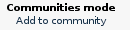
3. Read the communities description and utility. If you are interested in its functionallity,
click on Continue option. If you are'nt, only click on
Back option to discard the entire process. Nevertheless, you may delete
yourself from communities as you like.
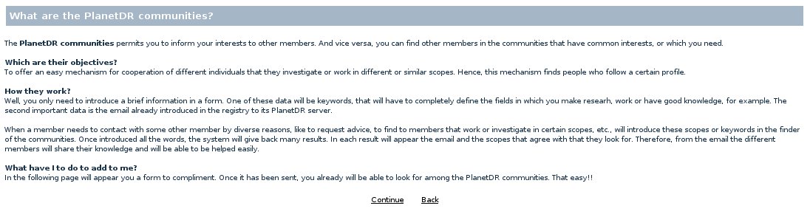
4. If you continue the process, you must almost type the information required in mandatory fields in the next web.
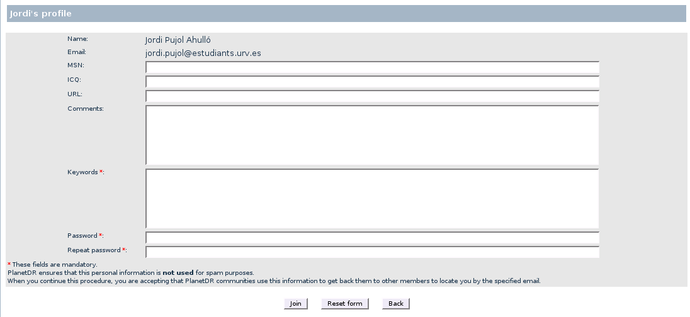
5. Finally, you accept all typed information and conditions clicking on Join button. At this moment, you
should see the following results:
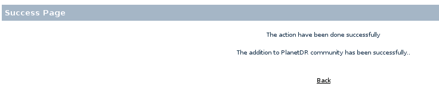
In other case, you will see a navigator alert with the error specification. When you read this message
and accept it, you will see a result as follows; you should click on Back option to repeat this step.
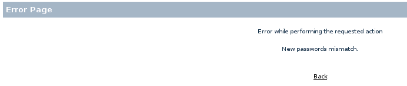
6. When you are already accepted on PlanetDR communities, you must see the Communities mode as follows:
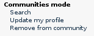
Searching other members by keywords.
1. The main goal of the communities is to offers a search mechanism by keywords,
to find other members with the related interests. Click on Search option in the
Communities mode.
2. In the following page, you should type the interests that you need for your research or job,
separated by blanks and click on Search button.
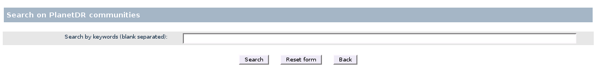
3. Depending on the search terms, you will see the results as follows:
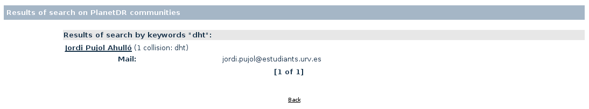
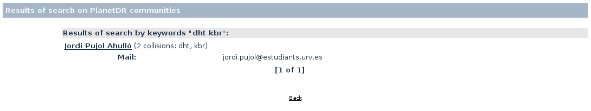
Furthermore, ten results per page are listed at the most.
Updating my profile.
1. Click on Update my profile option in the Communities mode.
2. You will see the following page, to modify your profile as you like.
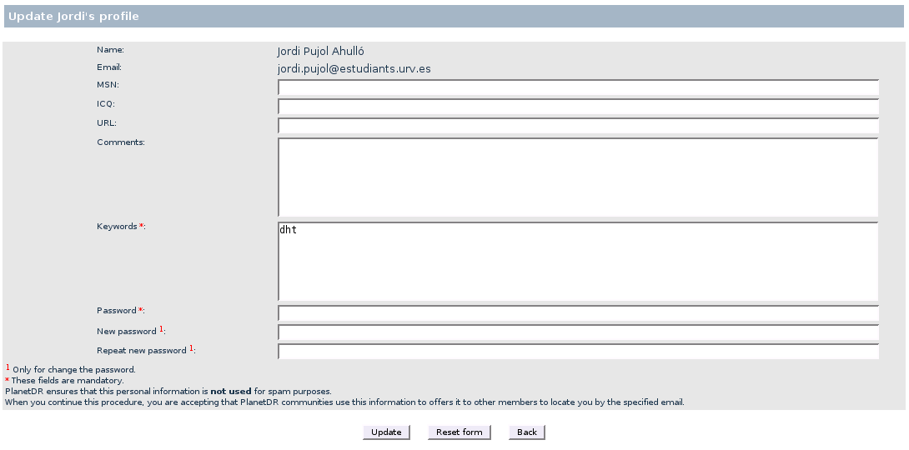
3a. When you only modify your personal information, you will see the following message.
NOTE: You must specify only the actual password in the field called Password.
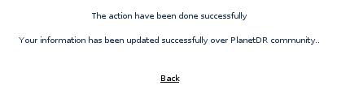
3b. When you modify also your actual password, you will see the following message.
NOTE: You must specify the actual password in the field called Password, and the new
password into fields called New password and Repeat new password.
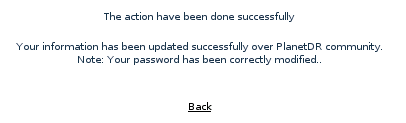
3c. If you have misspelled the password or else, you will see the following message.
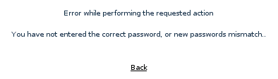
Removing from communities.
1. Click on Remove from communities option in the Communities mode.
2. You will see the following page, to type your password. When you accept the process, you must accept
a navigator alert to complete it.
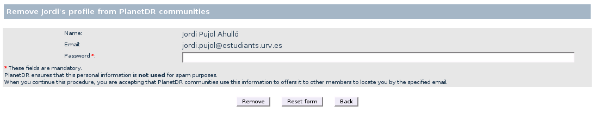
3. After this, you will see the Communities mode as the begining:
|